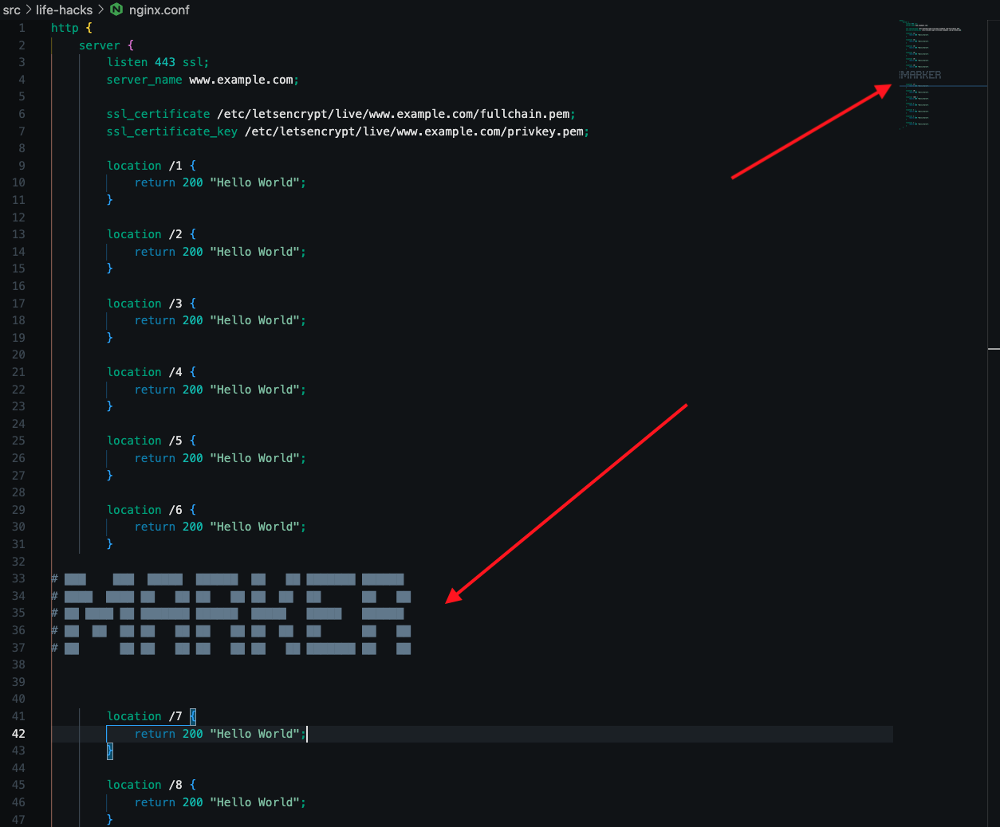

Welcome to my Garden

My name is Tyler Jones, and I've built this site to act as my personal cheat-sheet / tool box / junk drawer.
Life Hacks for Development
Gutter Navigation
When you have a large file, you can use the gutter to navigate to a specific line. But to make this actually useful, adding large text to a file will render in the gutter as something readable. This helps you navigate to a specific section.
Example; using this ansi art generator to add text as a comment in a large nginx config enables me to read the navigation on the gutter to the right side.

Things I always do to setup a mac how I like it.
Tools I always install on mac via brew
fd
~/
❯ fd
foo
foo/bar
foo/bar/thing.txt
foo/test.java
~/
❯ fd ar
foo/bar
~/
❯ fd txt
foo/bar/thing.txt
exa
Replacement for ls with a lot of nice features.
git-cola
A nice GUI for git commit management.
git-delta
A nice git diff viewer.
ripgrep
A must have search tool.
rg Thing.+java
rg -i thing.+java
rg -u # unrestricted search
rg -g "*.java" # search only java files
[gnu-sed]
Because the BSD sed is different and I don't want to remember the differences.
make
GNU Make, different than BSD Make.
hexyl
Pipe a file into hexyl to see the hex representation of the file.
htop
Better than top.
Apps
rectangl Window management for mac
iterm2 Terminal replacement for mac
A Spotlight replacement for mac, with more features and a better UX.
vscode Code editor
p4merge A better git merge tool
intellij Another IDE
DemoPro Screen drawing tool
fish The shell I use
[docker] obviously
gpg keychain GPG keychain management
Alias I like
alias uuid="python -c 'import uuid; print(uuid.uuid4())'"
alias dc="docker-compose"
alias ll="exa -lF --git"
alias la="exa -lF --all --git"
alias ls="exa"
fish shell functions
sha256
function sha256
echo -n "$argv[1]" | openssl dgst -sha256
end
ports
Print listening ports on mac
function ports
netstat -atp tcp | grep -i "listen"
end
hig
grep command history
function hig
set x "history"
set -l y " | head -n 10"
for arg in $argv
if test "$arg" = "--all"
set y ""
else
set x $x "grep \"$arg\""
end
end
set x (string join ' | ' $x)
set x (string join '' $x $y)
eval $x
end
hig is a function that greps your command history. It's useful for finding commands you've run before. It's a wrapper around history | grep. It takes the same arguments as grep. If the first argument is --all it will print all of your history instead of just the last 10 commands.
epoch
because i forget date cmd
function epoch
date +%s
end
noti
When running a long command which may error out mid-way. This function will notify you when the command stops, so you can check the output.
function noti
eval $argv
set -l output (echo "display notification \"cmd done\" with title \"$status\" subtitle \"exit:$status\" sound name \"Submarine\"")
osascript -e $output
end
Prompt
I use starship
My current prompt looks like this:
# ref: https://starship.rs/config/
# If you need to change this file location
# set export STARSHIP_CONFIG=~/example/non/default/path/starship.toml
# Inserts a blank line between shell prompts
#add_newline = true
# Replace the "❯" symbol in the prompt with "➜"
#[character] # The name of the module we are configuring is "character"
#success_symbol = "[➜](bold green)" # The "success_symbol" segment is being set to "➜" with the color "bold green"
# Disable the package module, hiding it from the prompt completely
[package]
disabled = true
[aws]
format = 'on [$symbol($profile )(\($region\) )]($style)'
style = "bold blue"
symbol = "🅰 "
[aws.region_aliases]
us-east-1 = "va"
us-west-1 = "ca"
us-west-2 = "or"
#[aws.profile_aliases]
# redacted
[nodejs]
disabled = true
[terraform]
disabled = true
[java]
disabled = false
[character]
success_symbol = "[❯](bold green)"
error_symbol = "[❯](bold red)"
# Use custom format
format = """$directory $git_branch $git_status
$symbol"""
# Wait 10 milliseconds for starship to check files under the current directory.
scan_timeout = 10
Gnu Make cheat sheet
https://www.gnu.org/software/make/manual
variables
TAG = 1.0.3
TF_LOG ?= DEBUG # if not set, set to DEBUG
THING := $(shell echo "hello world") # run a command and set the variable to the output
print help
.DEFAULT_GOAL := help
help: ## Shows this help menu
@awk 'BEGIN {FS = ":.*?## "} /^[a-zA-Z_-]+:.*?## / {printf "\033[36m%-30s\033[0m %s\n", $$1, $$2}' $(MAKEFILE_LIST)
init: ## Initialize stuff
@echo "Initializing stuff"
suppress output of the command run
thing:
@echo "hello world" # at-symbol suppresses printing "echo 'hello world'" to the terminal
Design Patterns
Factory Pattern
def CreatureFactory:
def __init__(self, modifiers):
self.modifiers = modifiers
def spawn(self, hero):
hp = hero.lvl
for modifier in self.modifiers:
hp += hp * modifier
return Creature(hp)
Great for creating objects with changing seeds, property abstraction, or when the factory state changes over time.
Observer Pattern
hooks = {'EventA': [fn1, fn2]}
sub(type, fn):
hooks[type].push(fn)
pub(type, data):
hooks[type].each(fn => fn(data))
foo(thing):
event = doStuff(thing)
pub('EventA', event)
- events abstract actions from each other
- great for operations which are independent of each other
- bad for order of operations or ensuring that a thing actually happens (eg. potentially no subscribers but was desired)
Plugin Pattern
# user_code.sc
handle(event):
do_something(event)
import user_code
Lambda:
self.handler
handle(event):
self.handler(event)
lamb = Lambda(user_code.handle)
lamb.handle(event)
- custom extensibility
- harder to secure
- usually needs a custom language to minimize attack surface
Strategy Pattern
Maze:
self.strategy
solve():
self.strategy.solve(self)
m1 = Maze(dfs_strat)
m2 = Maze(bfs_strat)
compare(m1, m2)
- provided behavior instead of inheritance
- reduce the number of boiler classes
- decouple changes in middle classes from heirarchy
Actor Pattern
#todo: create a better example
sys = System()
actor = ResourceActor("A")
sys.register(actor)
resource = actor.ask(ResourceMsg("foo"))
sys.ask(DeleteMsg(), addr://A/foo)
# resource now owned by and addressed at addr://A/foo by the system
- resource ownership is explicit
- resources are addressable
- fulfillment of resources and actions are decoupled from the individual services via addressed msgs
Algorithm Field Guide
0-1 Knapsack
The 0/1 Knapsack pattern is based on the well-known problem with the same name, which is solved using dynamic programming. When given the weights and profits of ‘N’ items, you are asked to put these items in a “knapsack” with a capacity ‘C.’ The goal is to get the optimum profit out of the items in the knapsack. The only difference between the 0/1 Knapsack problem and the subset sum problem is that, in the 0/1 Knapsack problem, we are not allowed to break an item. We either take the whole item or don’t take it. Thus why in my opinion the 0-1 is usually more applicable. With a close second being the combinations varient (coins and such).
from dataclasses import dataclass
@dataclass
class Gem:
color: str
weight: int
value: int
GEMS = [
Gem("red", 1, 1),
Gem("blue", 2, 5),
Gem("blue", 2, 5),
Gem("green", 3, 10),
]
def knapsack(gems, capacity):
if capacity<=0 or len(gems)==0: # exit condition, recursive approach
return []
last_gem = gems.pop()
if last_gem.weight > capacity: # if the gem is too heavy, skip it
return knapsack(list(gems), capacity)
set1 = knapsack(list(gems), capacity)
set2 = [last_gem, *knapsack(list(gems), capacity - last_gem.weight)]
if sum(g.value for g in set1) > sum(g.value for g in set2):
return set1
return set2
answer = knapsack(list(GEMS), 5)
print(f"""CAPACITY: {5}, VALUE: {sum([answer.value for answer in answer])}, ANSWER: {[answer.color for answer in answer]}""")
answer = knapsack(list(GEMS), 4)
print(f"""CAPACITY: {4}, VALUE: {sum([answer.value for answer in answer])}, ANSWER: {[answer.color for answer in answer]}""")
answer = knapsack(list(GEMS), 6)
print(f"""CAPACITY: {6}, VALUE: {sum([answer.value for answer in answer])}, ANSWER: {[answer.color for answer in answer]}""")
answer = knapsack(list(GEMS), 7)
print(f"""CAPACITY: {7}, VALUE: {sum([answer.value for answer in answer])}, ANSWER: {[answer.color for answer in answer]}""")
CAPACITY: 5, VALUE: 15, ANSWER: ['green', 'blue']
CAPACITY: 4, VALUE: 11, ANSWER: ['green', 'red']
CAPACITY: 6, VALUE: 16, ANSWER: ['green', 'blue', 'red']
CAPACITY: 7, VALUE: 20, ANSWER: ['green', 'blue', 'blue']
Least Recently Used (LRU) Cache
This LRU implementation is based on a double linked list. The list is used to keep track of the order in which the items are used. The list is ordered from most recently used to least recently used. The head of the list is the most recently used item, and the tail of the list is the least recently used item. It does not consider the size of the cached value when determining which item to evict.
class LRUCache {
constructor(capacity) {
this.capacity = capacity
this.cache = new Map()
this.tail = Node()
this.head = Node()
class Node {
constructor(key, value) {
this.key = key
this.value = value
this.next = null
this.prev = null
}
}
this.get = function (key) {
if (this.cache.has(key)) {
let node = this.cache.get(key)
this._moveToHead(key)
return node.value
}
return undefined
}
this._add = function (node) {
node.prev = this.head
node.next = this.head.next
this.head.next.prev = node
this.head.next = node
}
this._remove = function (node) {
node.prev.next = node.next
node.next.prev = node.prev
}
this._moveToHead = function (node) {
this._remove(node)
this._add(node)
}
this.put = function (key, value) {
if (this.cache.has(key)) {
let node = this.cache.get(key)
node.value = value
this._moveToHead(node)
}
var node = new Node(key, value)
this.cache.put(key, node)
this._add(node)
// cleanup
if (this.cache.size > this.capacity) {
let node = this.tail.prev
this.cache.delete(node.key)
this._remove(node)
}
}
}
}